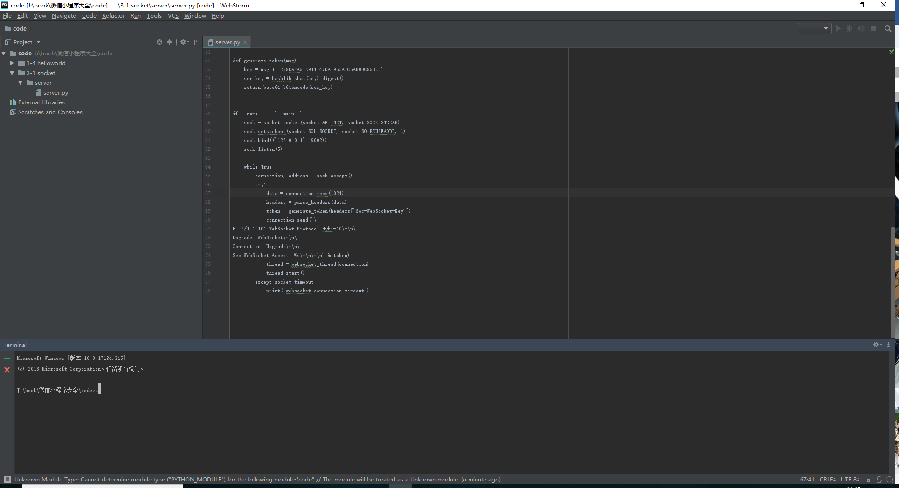
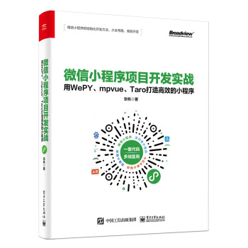

WePY的安装或更新都通过npm进行，全局安装或更新WePY命令行工具，使用以下命令：
npm install wepy-cli -g
稍等片刻，成功安装后，即可创建WePY项目。
注意：如果npm安装时间过长或者是连接超时而导致的失败，则可以使用国内的镜像源，这里推荐一个稳定的源，来自淘宝。网站地址为http://npm.taobao.org/，可以使用淘宝定制的cnpm（gzip压缩支持）命令行工具代替默认的npm:
$ npm install -g cnpm --registry=https://registry.npm.taobao.org
安装好环境后，再找一个良好的编写代码的IDE环境。这里强烈推荐来自JetBrains系列的WebStorm最新版本，它已经完美支持了Vue.js的开发以及ESLint的语法形式，所以编写代码非常顺畅和方便，其编写代码的页面如图1-26所示。

图1-26 编辑器界面
同样，在WebStorm中使用Alt+F12键可以唤起内置的命令行，这对于需要编译的WePY而言，也无需每次使用cd命令进入项目文件这样方便得多。
微信小程序的结构化开发方法，少走弯路，高效开发，一起来学习《微信小程序项目开发实战：用WePY、mpvue、Taro打造高效的小程序》吧。
